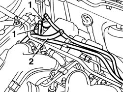
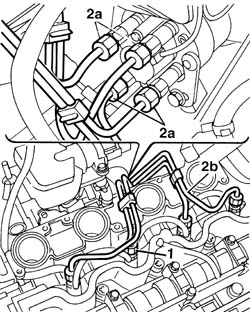
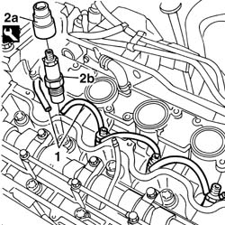

1060B10 injectors - r + r
- Path
- Procedures > 10 ENGINE > 1060 DIESEL FUEL INJECTION > 1060B injectors and pipes > 1060B10 injectors - r + r
- Kind
- repair procedure (removal / refitting; the operation number is the code)
- Applies to
- all engines; all production periods
- Interactive page
- https://sloeber94.github.io/elrnDB-fDbl/en/#/2584462
Applies to: all engines; all production periods
 Removing
Removing
 Refitting
RefittingPlace the car on a ramp. 7055B54 under-engine guard - r r
1. Disconnect the rapid attachments for the fuel supply and return pipes to the injection pump.
2. Disconnect the injector recirculation pipe from the fuel pipe on the injection pump.

Applies to: all engines; all production periods
1016A22 cam cover with fuel duct - r + r and replace gasket
1. Undo the injector connectors from the rigid supply pipe.
2. Undo injector pump connectors (2a) from the rigid supply pipes, then remove the rigid pipe (2b) supplying the injectors.

Applies to: all engines; all production periods
1. Disconnect the fuel return pipes from the injectors.
2. Use tool (2a) to remove injectors (2b).
 | Name | Country |
|---|---|---|
2a | Spanner | 1.850.177.000 |

Applies to: all engines; all production periods
Refitting
RemovingFit the injectors into the housing.
Use tool to tighten the injectors to torque.
| Name | Country |
|---|---|---|
- | Spanner | 1.850.177.000 |
 | Fastening | Component | Ø | Value (daNm) |
|---|---|---|---|---|
- | Injector | INJECTORS | M24 x 2 | 6 |
Fit the fuel return pipes on the injectors.
Fit the rigid supply pipe to the injectors.
Tighten the rigid supply pipe connections on the injectors and on the injection pump.
| Fastening | Component | Ø | Value (daNm) |
|---|---|---|---|---|
- | Nut | INJECTOR FUEL DELIVERY PIPES | M12 x 1.5 | 2.5 |
1016A22 cam cover with fuel duct - r + r and replace gasket
Connect the fuel pipe injector recirculation pipe to the injection pump.
Connect the fuel supply and return pipe quick release fittings to the pump.
7055B54 under-engine guard - r r Remove the car from the lift.